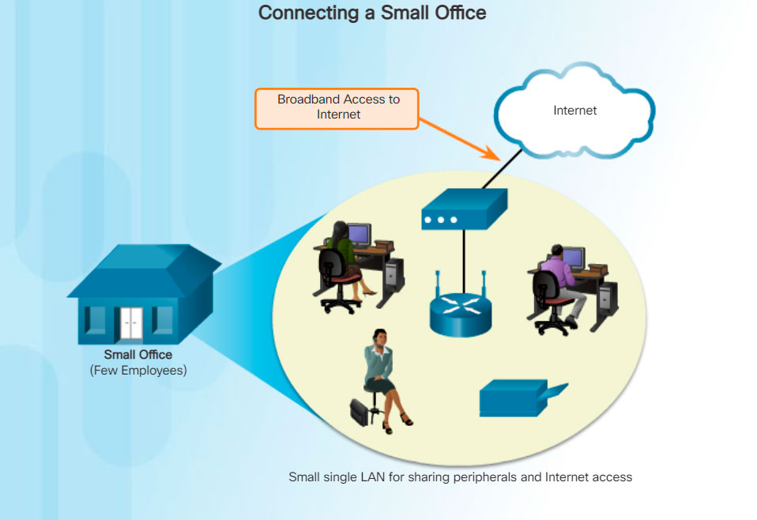

SPAN Engineering, an environmental consulting firm, has developed a special process for converting household waste into electricity and is developing a small pilot project for a municipal government in its local area. The company, which has been in business for four years, has grown to include 15 employees: six engineers, four computer-aided drawing (CAD) designers, a receptionist, two senior partners, and two office assistants.
SPAN Engineering’s management is working to win full-scale contracts after the pilot project successfully demonstrates the feasibility of their process. Until then, the company must manage its costs carefully.
For their small office, SPAN Engineering uses a single LAN to share information between computers, and to share peripherals, such as a printer, a large-scale plotter (to print engineering drawings), and fax equipment. They have recently upgraded their LAN to provide inexpensive Voice over IP (VoIP) service to save on the costs of separate phone lines for their employees.
Connection to the Internet is through a common broadband service called Digital Subscriber Line (DSL), which is supplied by their local telephone service provider. With so few employees, bandwidth is not a significant problem.
The company cannot afford in-house IT support staff, and uses support services purchased from the DSL provider. The company also uses a hosting service rather than purchasing and operating its own FTP and email servers.
The figure shows an example of a small office and its network.
